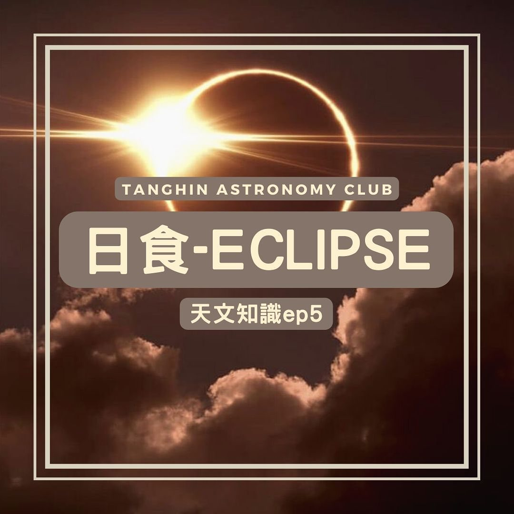
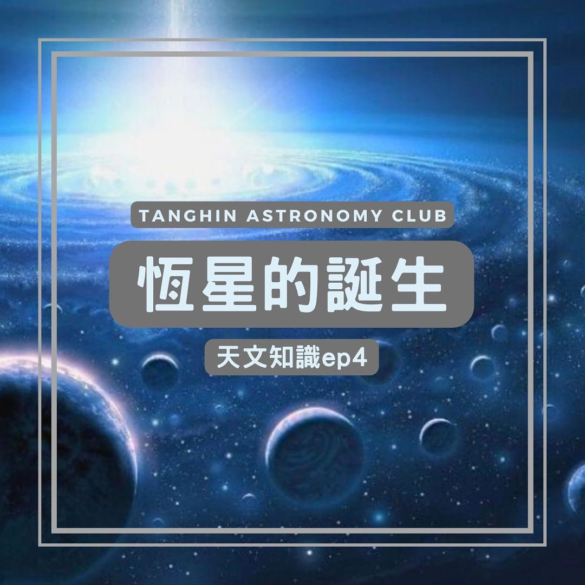
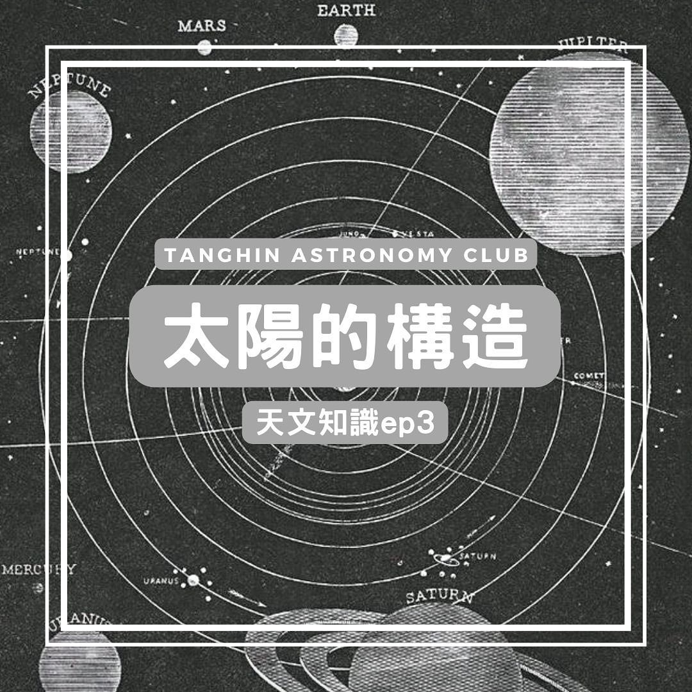
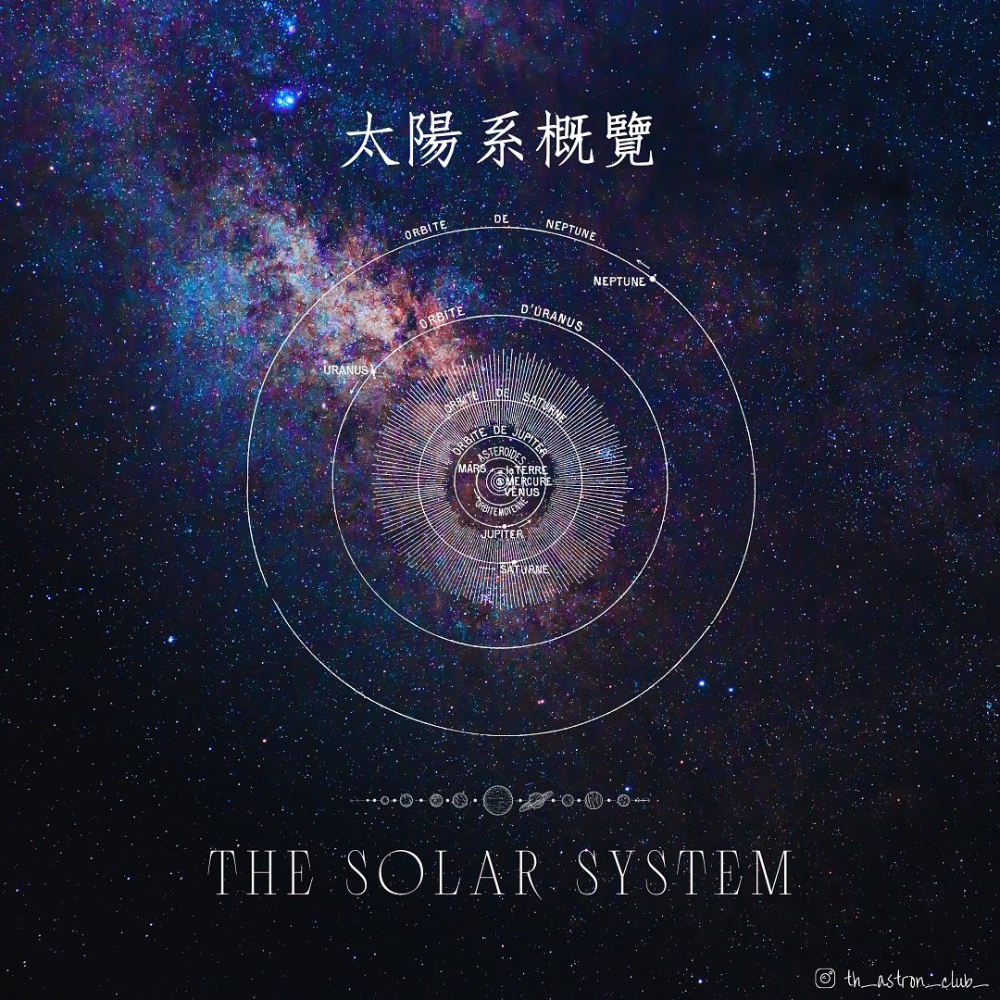
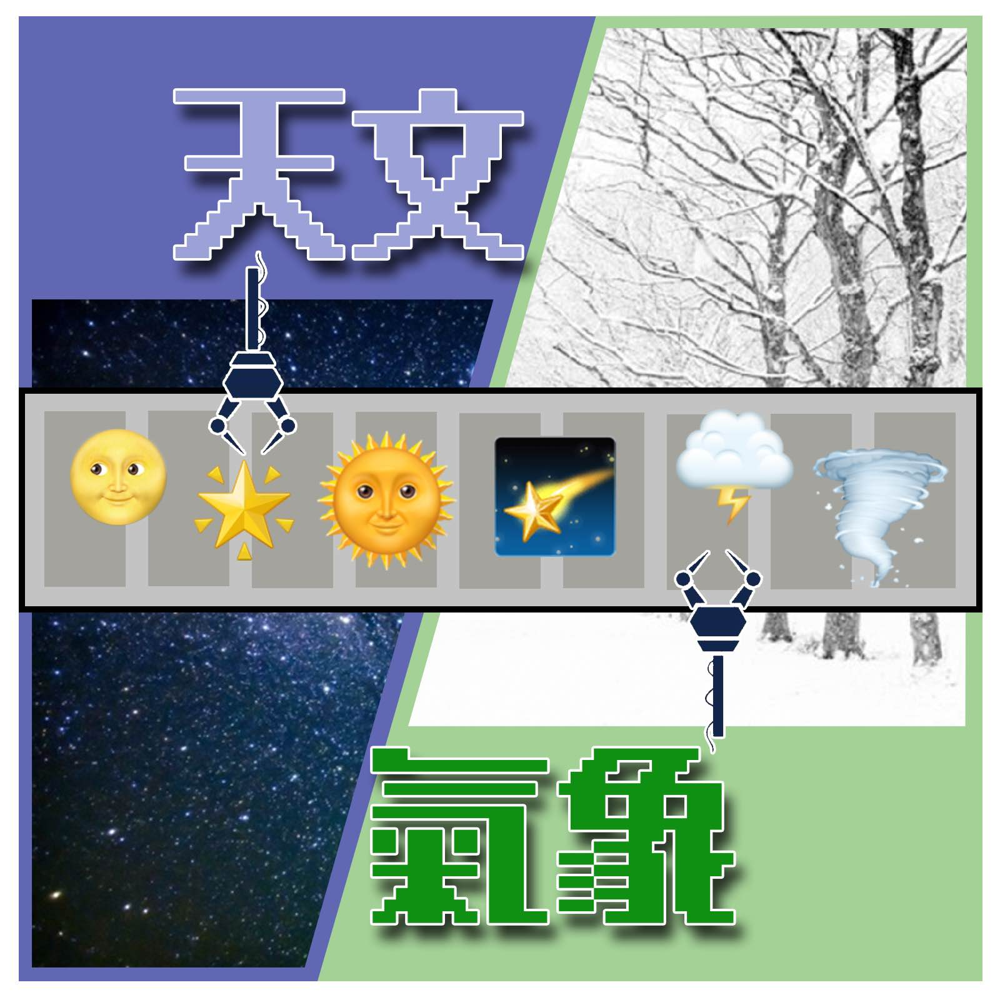

天文冷知識 EP5
日食
日食
Post at 22/3/2022

天文冷知識 EP4
恆星的誕生
恆星的誕生
Post at 18/3/2022

天文冷知識 EP3
太陽的構造
太陽的構造
Post at 14/3/2022
天文電影介紹 EP1
The Martian 火星任務
The Martian 火星任務
Post at 12/3/2022

天文冷知識 EP2
太陽系概覽
太陽系概覽
Post at 10/3/2022

天文冷知識 EP1
天文VS氣象？
天文VS氣象？
Post at 7/3/2022